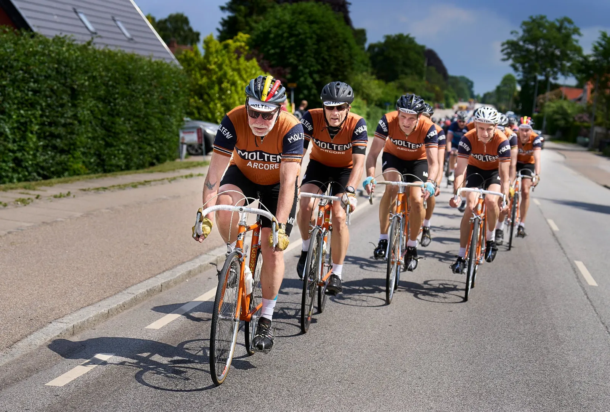
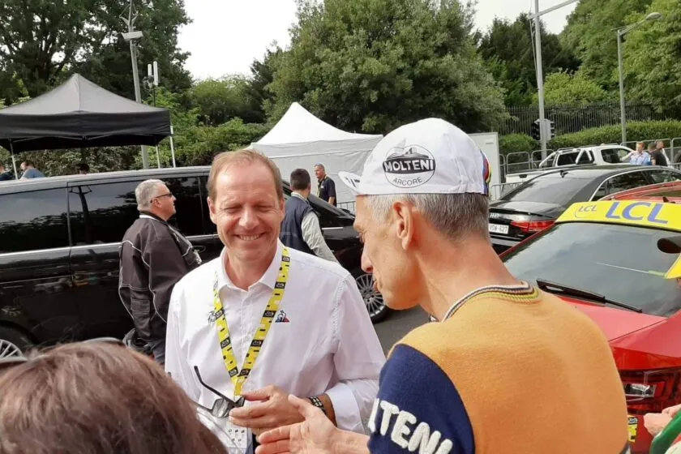
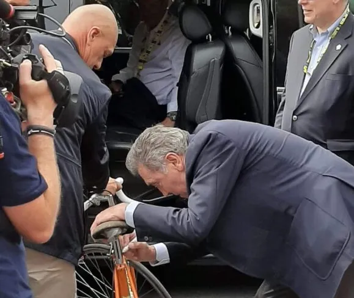
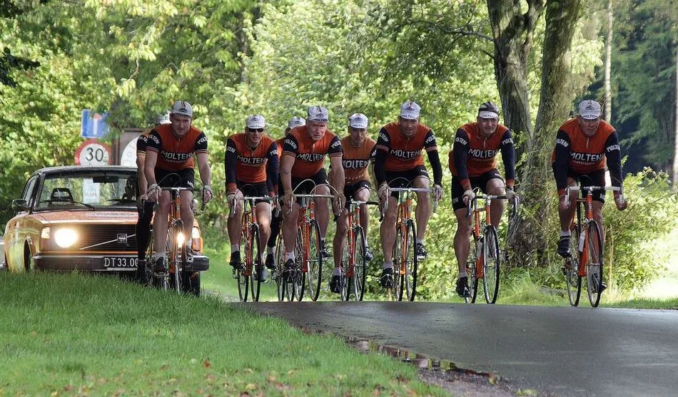

Squadra Molteni kører Tour de France Grand Départ

Det danske retro-cykelhold Squadra Molteni kører alle 3 Tour de France etaper i Danmark, og har allerede erobret den gule trøje.
Mange er naturligvis optaget af, at en af verdens største sportsbegivenheder på fredag rammer Danmark: Tour de France Grand Départ – 3 etaper i Danmark. Landet er ved at klæde sig i gult, Hr og Fru Danmark har stillet havebord og stole ud til vejen og øllene er lagt på køl. Men der er ikke mange der ved, at det danske retro-cykelhold, Squadra Molteni, allerede er i gang med Tour de France Grand Départ!
– Vi har allerede kørt 2. etape Roskilde – Nyborg. Det gjorde vi i forbindelse med Tour de Storebælt for et par uger siden. Vores 9-mands Tour de France 1973 hold var utrolig godt kørende. Det meste af etapen trak Squadra Molteni store felter af carboncykler, der forgæves forsøgte at holde hjul, fortæller holdets sportsdirektør Klaus Maarup Kjærsgaard.


Tour de France 1973
Sagen er den, at holdet er ude og råde bod på et alvorligt hul i Molteni-holdets historie – nemlig Tour de France 1973! Eddy Merckx vandt Tour de France i 1969 og 1970 for Faema-holdet. Merckx skiftede til Molteni i 1971, og fortsatte med at vinde Tour de France i 1971, og igen i 1972. Men i 1973 stillede Molteni ikke op til Tour de France!
Hvorfor? Jo, franskmændene var sure over, at Merckx vandt hele tiden – og endda for et italiensk hold. Og ledelsen på den italienske pølsefabrik Molteni, som var holdets hovedsponsor, mente forøvrigt, at der ville være mere reklame i, at Molteni og Merckx kørte Giro d’Italia og Vuelta a España.
Og sådan blev det i 1973. Ingen Tour de France, men Merckx vandt både Giro d’Italia og Vuelta a España. Året efter, i 1974, stillede Molteni-holdet igen op til Tour de France, og Eddy Merckx vandt for 5. gang.
– Squadra Molteni er i tæt kontakt med Pierangela og Mario Molteni, der er datter og søn af den legendariske Ambrogio Molteni, der var leder af Molteni-holdet i 1970’erne. Vi har fået til opgave, at vinde Tour de France 1973, så der kan komme orden i historien. Så det er det vi i gang med – og det går efter planen. Vi har den gule trøje og fører også holdkonkurrencen, fortæller Squadra Moltenis kaptajn, Niels Bjørnsteen.

Wildcard underskrevet af Eddy Merckx i Bruxelles
I det tidlige forår 2019 blev det besluttet, at holdets globetrotter Kristian Blume skulle rejse til Tour de France Grand Depart i Bruxelles, for at være med til at markere 50-året for Eddy Merckx’s første toursejr. Men der var selvfølgelig også en skjult dagsorden: at forsøge at påvirke Christian Prudhomme, så Squadra Molteni kunne komme i betragtning til et wildcard Tour de France Grand Depart Copenhagen Denmark.


– Jeg havde forberedt mig grundigt. De sidste 3 uger har jeg pløjet mine gamle franskbøger fra gymnasiet igennem og den orange Colnago Eddy Merckx cykel var poleret 3 gange med Turtle Wax, fortæller Kristian Bulme.
– Det lykkedes mig at få fat på Christian Prudhomme. Vi jeg fik en god snak – og han sluttede med at sige ordret til mig: “See you in Copenhagen in 2 years”.
Efter denne lovning på et wildcard steg Eddy Merckx ud af en sort Limosine. Eddy gik resolut hen til Blume, bukkede sig ned og underskrev aftalen med sin autograf på overrøret af Blumes cykel.


1. etape og holdpræsentation i Tivoli
Onsdag den 29. juni er der holdpræsentation af pro-tourholdene i Tivoli. Også her er Squadra Molteni på pletten. Som optakt til de pro-tourholdenes præsentation, vil der også være præsentation af en række historiske cykelhold – herunder Squadra Molteni. Men inden da, er der en 1. etape der skal køres.
– Som det også var tilfældet, da vi kørte 2. etape, så er vi jo ude i god til. Det vil sige, at vi kører 1. etape allerede 2 dage før profferne. Men det give lidt udfordringer, for ruten er ikke afspærret. Så vi kører enkeltstarten i almindelig københavnertrafik på cykelstier og med diverse lysreguleringer. Det kommer selvfølgelig til at gå ud over sluttiden for de 13 km, men det må vi leve med, siger sportsdirektør Klaus Maarup Kjærsgaard.
3. etape, Vejle – Sønderborg
Søndag den 3. juli køres 3. etape fra Vejle til Sønderborg. Mens pro-tourholdene først starter kl. 13.15 fra Vejle, så sender Squadra Molteni sit Tour de France 1973 hold med tilhørende teambil afsted allerede kl 06.30. Etapen er naturligvis den samme som pro-turholdene skal køre: 182 km fra Vejle, over Kolding, Haderslev, Aabenraa til Sønderborg.
– Ved at starte allerede 06.30 fra Vejle undgår vi at komme i karambolage med lukkede veje og fransk gendarmerie. Vi kører selvfølgelig før TV-helikopterne er i luften, men vi regner med, at TV 2 Charlie sender et par live indslag i løbet af formiddagen, fortæller Kaptajn Bjørnsteen.

